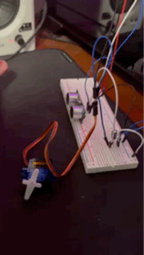

Circuit Photo

This is the circuit setup. The yellow and white wires are for the capacitve touch, touching yellow wire will turn on the motor and touching white wire will turn off the motor.
Circuit schematic

This image shows the circuit schematic. I used an 1MΩ resistor for the capacitive touch to limit the current and also to creat a measurable time delay for the small capacitance changes caused by touch.
Transistor/motor voltage and current calculation:
The MOSFET is rated for 32 A. The motor’s datasheet lists a current of 1.5 A at 6 V. In my code the PWM duty is 50/255 ≈19.6%, so the motor’s effective voltage from a 12 V supply is 12 V × 0.196 ≈ 2.35 V. Scaling the 6 V current linearly gives 1.5 A × (2.35/6) ≈ 0.59 A.
Circuit operation

This GIF shows the circuit in operation. Servo motor moves based on the distance read from the ultrasonic sensor.
Code Snippet
// Import Capacitive Sensor library
#include
// Create two capacitive sensor objects, with send pin on pin 4 and recieve pin on pin 2(yellow wire) an 6 (white wire)
CapacitiveSensor cs_4_2 = CapacitiveSensor(4,2);
CapacitiveSensor cs_4_6 = CapacitiveSensor(4,6);
// Pin connect to gate pin on the transistor to control motor speed
int motorPin = 9;
// Variable to store motor speed
int speed = 0;
void setup() {
// Disable auto-calibration for both sensors
cs_4_2.set_CS_AutocaL_Millis(0xFFFFFFFF);
cs_4_6.set_CS_AutocaL_Millis(0xFFFFFFFF);
// Start serial communication for debugging
Serial.begin(9600);
// Set motor control pin as output
pinMode(motorPin, OUTPUT);
}
void loop() {
// Read capacitive sensor and record those value as total1 and total2
long total1 = cs_4_2.capacitiveSensor(30);
long total2 = cs_4_6.capacitiveSensor(30);
// if yellow wire(connect to pin 2) is touched
if(total1 > 100){
// Increase speed by 25
speed += 25;
// Capped the maxium speed to 50, capacitive sensor stopped working if speed go above 50
if (speed > 50) speed = 50;
// Send the new speed to the motor
analogWrite(motorPin, speed);
}
// if white wire(connect to pin 6) is touched
if(total2 > 100){
// Decrease speed by 25
speed -= 25;
//Set min as 0
if (speed < 0) speed = 0;
// Send the new speed to the motor
analogWrite(motorPin, speed);
}
// Wait half a second to avoid clutter/inaccurate reading
delay(500);
// Print the current speed for monitoring
Serial.println(speed);
}
Additional Questions
1: Say you are using a servo motor you attach to pin 9. In your loop() you have the following code:
void loop() {
for (pos = 0; pos <= 180; pos += 1) {
myservo.write(pos);
delay(100);
}
}
Draw a graph with the x-axis as time and the y-axis as voltage at pin 9 with respect to ground.

2: Your input device is slightly broken, leading it to give us an erroneous reading 1% of the time. How can we address this? Answer in (pseudo)code.
int sensorValue;
int inputPin = A0;
int preiousValue;
void loop() {
sensorValue = analogRead(inputPin);
if (sensorValue > preiousValue*2.5 || sensorValue < preiousValue/3) {
sensorValue = preiousValue;
}
if (sensorValue < preiousValue/3) {
sensorValue = preiousValue;
}
preiousValue = sensorValue;
}
3: Your input device is slightly noisy, leading the measurement to randomly deviate from the true measurement up or down by 10%. How can we address this? Answer in (pseudo)code.
const int numReadings = 10;
int readings[numReadings];
int readIndex = 0;
int total = 0;
int average = 0;
int sensorValue;
int inputPin = A0;
void setup() {
for (int thisReading = 0; thisReading < numReadings; thisReading++) {
readings[thisReading] = 0;
}
}
void loop() {
sensorValue = analogRead(inputPin);
total = total - readings[readIndex];
readings[readIndex] = sensorValue;
total = total + readings[readIndex];
readIndex = readIndex + 1;
if (readIndex >= numReadings) {
readIndex = 0;
}
average = total / numReadings;
}
// reference: https://docs.arduino.cc/built-in-examples/analog/Smoothing/
All documentation for Assignment 4 is included above.